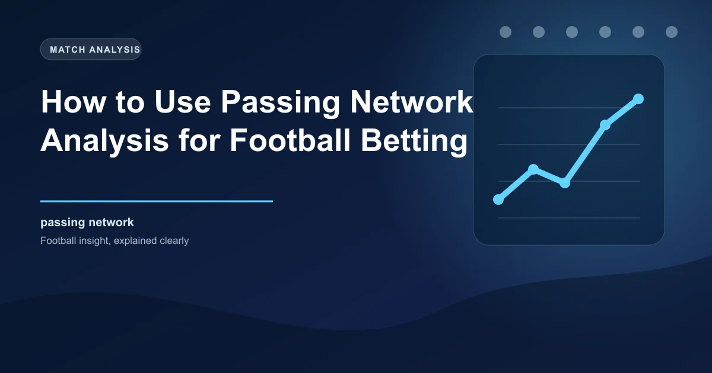

Football analytics has evolved far beyond basic statistics like possession percentage and total passes. One of the most powerful tools in the modern analyst's arsenal is passing network analysis. A passing network diagram visualises how a team moves the ball, which players are connected to each other through passing sequences, and where the tactical structure of the team actually exists on the pitch. For bettors, this kind of information can reveal insights that traditional statistics simply cannot capture.
Understanding passing networks gives you a window into a team's tactical identity that goes deeper than formations listed on a team sheet. A team may line up in a 4-3-3 on paper, but their passing network might reveal that they effectively operate as a 3-2-5 in possession, with a full-back tucked into midfield and a winger hugging the touchline. This kind of nuance matters enormously when evaluating matchups and predicting how a game will unfold.
A passing network is a visual representation of every completed pass between teammates during a match or across multiple matches. Each player is represented as a node (a dot) on the diagram, and the lines connecting them represent the number and frequency of passes between those two players.
The position of each node on the diagram roughly corresponds to the player's average position on the pitch during the time they were on the field. The size of each node typically reflects how involved that player was in the team's passing play. The thickness of the lines between players indicates how frequently those two players completed passes to each other.
By looking at these visual patterns, you can quickly grasp the tactical DNA of a team in a way that raw statistics cannot convey. The shape of the network tells you where a team is strong, where they are vulnerable, and how they prefer to construct attacks.
A dominant passing network, typical of teams like Manchester City under Pep Guardiola or Barcelona during their peak years, has several distinctive features. The nodes are tightly clustered together, reflecting short passing distances and players who stay close to each other to maintain passing options. The lines are thick and numerous, indicating high pass volumes between many different pairs of players.
In these networks, the goalkeeper often appears as an active participant, with visible connections to the centre-backs. The centre-backs themselves have thick connections to each other and to the full-backs, who in turn are connected to the wingers and central midfielders. The entire team operates as a connected web where the ball can move fluidly from any position to any other position.
The key characteristic of a dominant passing network is its balance. No single player monopolises possession, and no area of the pitch is disconnected from the rest. This balanced distribution makes it extremely difficult for opponents to press effectively, because shutting down one passing lane simply opens up another.
A disconnected passing network tells a very different story. You will see clusters of players who pass mostly to each other with few connections between the clusters. For example, the defence might have strong internal connections but weak links to the midfield, suggesting the team struggles to progress the ball from back to front.
Another common pattern is the isolated striker. When a team plays a direct style or lacks a creative midfielder, the striker's node will sit high up the diagram with very thin lines connecting them to the rest of the team. This player relies on individual moments of quality rather than structured build-up play.
These patterns reveal weaknesses that do not always show up in standard match statistics. A team might have 55% possession but a disconnected network that suggests their dominance is superficial, consisting mostly of safe passes in their own half with little penetration into dangerous areas.
One of the most valuable applications of passing network analysis for bettors is the ability to identify a team's true tactical shape before a match. Official formations listed in team news and on the scoresheet are often misleading. A team listed as playing 4-3-3 might actually deploy a 2-3-5 in possession, with the full-backs pushed so high they effectively become wingers.
Passing networks from previous matches reveal the reality of how a team plays rather than how they claim to play. By analysing the last five to ten matches, you can build a picture of a team's average tactical structure that is far more reliable than any pre-match press conference or predicted lineup.
This information is particularly useful for betting because tactical matchups are one of the most important factors in determining match outcomes. A team that builds through the centre will struggle against an opponent that presses the midfield aggressively. A team that creates through wide overloads will find success against an opponent with narrow defensive organisation. Passing networks help you identify these matchups before the odds fully reflect them.
Compare the passing networks of both teams before a match. If one team's network shows strong central connections and the other team's network shows vulnerability through the centre, this tactical matchup favours the first team regardless of their overall quality ranking.
One of the most practical insights from passing network analysis is identifying whether a team prefers to attack through central areas or wide areas. This distinction has significant implications for multiple betting markets.
Teams that play through the middle will have a passing network with thick connections running vertically through the centre of the pitch. The central midfielders will be heavily connected to the strikers, and the ball progression will follow a central corridor. These teams tend to create chances through intricate passing combinations in tight spaces.
Teams that play wide will have a passing network that is stretched horizontally. The full-backs will have thick connections to the wingers, and the ball will frequently move from one flank to the other through the centre-backs or a deep midfielder. These teams create chances through crosses, cutbacks, and wide overloads.
The true value of passing network analysis lies in its practical application to betting markets. Here are the most direct ways this information can improve your betting decisions.
By comparing the passing networks of two teams, you can predict which team will control the tactical flow of the match. If Team A plays through the centre and Team B has shown vulnerability through the middle in their recent passing networks, Team A has a tactical advantage that may not be fully reflected in the odds.
A team with a tightly connected passing network and high pass volumes is more likely to dominate possession in their next match, particularly against opponents with disconnected networks. This has direct applications for possession-based betting markets and Over/Under goal markets.
When both teams have tightly connected, balanced passing networks, the match is more likely to be a controlled, tactical affair with both teams keeping the ball. When one team has a dominant network and the other is disconnected, the match is more likely to be one-sided in terms of possession and territory, even if the score remains close.
This information is valuable for in-play betting. If you see early in a match that one team's passing patterns resemble their dominant network while the other looks disconnected, the momentum is likely to stay with the dominant team, and live betting markets may still offer value before the odds adjust.
Teams with disconnected passing networks that rely on isolated attacking moments are often more vulnerable to conceding while simultaneously dangerous on the counter-attack. This profile frequently produces BTTS (Both Teams to Score) outcomes because the team can score despite limited possession but also concedes due to defensive exposure. Conversely, two teams with dominant, connected networks playing each other may produce fewer BTTS outcomes if both teams control the game effectively.
While passing networks are a powerful analytical tool, they have important limitations that bettors should understand. First, passing networks only capture completed passes. They do not account for attempted passes that were intercepted, passes that led to turnovers, or the quality of the chances created. A team might have a beautiful passing network but consistently fail to create high-quality scoring opportunities.
Second, passing networks can be misleading when teams adjust their tactics during a match. A team that starts with a disconnected network but switches to a more connected approach after half-time will have an average that does not accurately represent either phase. This is why it is useful to look at half-by-half passing networks when available.
Third, the strength of the opponent affects the passing network. A team might look dominant against weaker opposition but struggle to build the same connections against a team that presses aggressively. Always consider the quality of the opponent in the matches that generated the passing network you are analysing.
Use our free Ticket Builder to structure bets informed by deep tactical analysis. Make every selection count.
 Win
Win